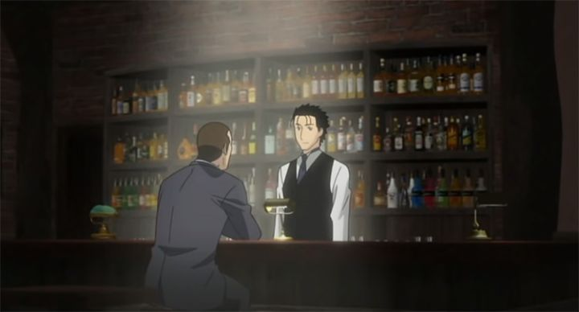

While America has, for a time, been spoiled in their selection of translated Japanese anime, there are a few select titles that fall through the cracks. This has become increasingly noticable in the late 2010's, when virtually all anime was available for online streaming somewhere with subtitles, but not always for ownership. Anime Limited has become a quick fan favorite publisher for the UK, rescuing and releasing several titles both new and old, some of which were expected to never see the light of day. Through strategic partnerships, a handful of these titles would be imported for America, but still be an AL release. ... of all the titles that would release in 2021, I never thought a first-time release of 2006's "Bartender" would be one of them. Advertised as a limited-edition "15th anniversary set," the Bluray came with special packaging, including (paper-thin) coasters and art cards with short stories and cocktail recipies. It was a direct import of the UK set, still with the BBFC age rating on the discs. It's a relatively nice set, but bizarre that it would first be released exclusively in this manner, without a more standard release alongside it. Perhaps they new the show had a small following, and that they would be willing to pay. But was there really a following? I remember a handful of anime YouTubers reviewing it, generally with critical praise, but acknowledging that it is a quite boring series with a niche premise. Beyond that, I hadn't really heard of any particular hope that it would be officially released. With so much other content available, it was easy to forget and move on with. Futhermore, the studio behind it had been out of business for over a decade. The choice to bring it back was baffling, when there are still other things to rescue. But why argue? Every series released is yet another option for the savvy viewer, whatever the title may be. The premise of "Bartender" is simply "a love letter to alcohol and the bar atmosphere." Starting with a line that mentions "2006 is the 200th anniversary of the invention of the cocktail," it stars a young bartender, Ryu, at the fictional "Eden Hall," a tiny bar hidden in the corner of the Ginza district of Tokyo. Quiet and secluded, patrons come across it often by accident, discovering that Ryu is the famous man known to serve the "Glass of the Gods," a man with the gift to memorize the history of drinks, the history of his customers and what their preferences are, and most importantly, how to read a person and narrow down the best drink for them. This results in him providing seemingly perfect drinks for those that sit at his establishment. There is no particular story for the show: each episode introduces one or two new characters, their life story, how they come across "Eden Hall" and how they are served that special drink, complete with close-ups of the glass and long dialogue explaining its details. The drinks are real, making this one of the early "educational" shows that would start a small trend (years later, there would be similar shows on Japanese candy, and on the workings of the human body). The show even uses a live-action version of the bar and the bartender in the closing credits, with a brief live-action shot of a rotating bottle and recipe for the featured drink of the week.Of course, these are stories of beer, wine, whisky and cocktails from a Japanese perspective. Ginza in particular is known for their bars and bar-food, bringing up images of classy sushi, working-man's ramen, and fried foods with soy sauce. This is despite the very global histories of alcohol, with some stories referring to histories in France, Scotland and Mexico. And most of the episodic characters have lives that resemble the plight of the average Japanese adult: struggling to keep traditions alive as the world modernizes, or over-working as a salaryman for a corporation. It's all still relatable, but still feels slightly exotic, with the knowledge that the show is in fact in a quiet Japanese bar, not an American, British or German one.  It is somewhat relevant that I, personally, do not like alcohol. I have no morals against it, I just have always thought that it tastes terrible, no matter the form. Many people have tried to convince me onto it, suggesting that mixing with juice or soda would improve it. My answer is that a mix of juice and soda, without the brandy or beer, tastes even better still: alcohol is overpriced, dulls your senses, and only ruins the flavor of what you drink, all for the effect of drunkenness that I also don't understand the appeal of. I'm certain it's specifically the alcohol component too: the only time I've enjoyed it's flavor was if cooked down and evaporated as part of a food dish. Knowing this, you would think "Bartender" was specifically not meant for me, even if I do still enjoy romanticizing life on a Sunday evening with tea or ginger ale. The show seems to be aware of this, with a first episode that introduces a hotel managers tasked with redesigning its bar, despite explicitly hating all bars and "barmen" that work there for their pretentiousness. Another explicitly features a non-alcoholic cocktail, meant for women who might have a light palette. Amazingly, it manages to convince the viewer, no matter who they are, of the magic of the drink.The individual stories, too, are surprisingly well written and use some clever techniques, including that most of the characters speak directly to the camera, as if acting in a stage play. Sure, it's as melodramatic as a Japanese soap-opera (a live-action adaption does exist too, by the way), but always slightly better than I expected it to be, and never truly boring if in the right mood. For that matter, ALL anime is melodramatic in silly ways, so 'Bartender" feels grounded and refreshing by comparison. That's part of its appeal: it doesn't feel like an anime, instead more like a mature adult drama, not unlike NHK's modern travel documentaries on local Japanese towns and their food specialties, where "every ingredient has a story." "Bartender" is a strange show that doesn't excel or excite, but does what it intends in a quiet and dignified manner, and I can't help but respect it, while still leaving it with the same question: "I would watch it again, but I don't know anyone else who would willingly sit through it."Visually, the show definitely shows age, but there is some nice detail in the bottles of course. I was surprised to learn this was one of the few shows by Palm Studio, the company that launched with the original movie 'Tree of Palme," before they went under, and am happy to own this show just as part of that short-lived history. The Japanese-only acting is good, although it is a shame no English dub was provided as a strong drama opportunity. Music is pleasant, mostly the type of quiet bar music you'd here from a piano in the corner, meant to soothe you in that quiet sanctuary from the outside world.Of course, this isn't the only time cocktails have been compared to fine jewels, romanticized with a story that justifies its price. And one could put that passion to anything: I could just as easily go on for hours about the delicate aroma of a jar of dirt, or the subtle difference in color from one pencil brand to another. Cocktails just happen to be a culturally-accepted luxury, despite several case studies where experts were unable to tell the difference between an expensive and cheap glass of wine. If you choose to be skeptical in watching, you will be. But if willing to soak into the splendor of it all, you can just sit back and enjoy the stories and the drinks. "Bartender" makes it remarkably easy to do so.
- "Ani" More reviews can be found at : https://2danicritic.github.io/ Previous review: review_Barefoot_Gen_2 Next review: review_Batman_-_80th_Anniversary_-_18-Film_Collection